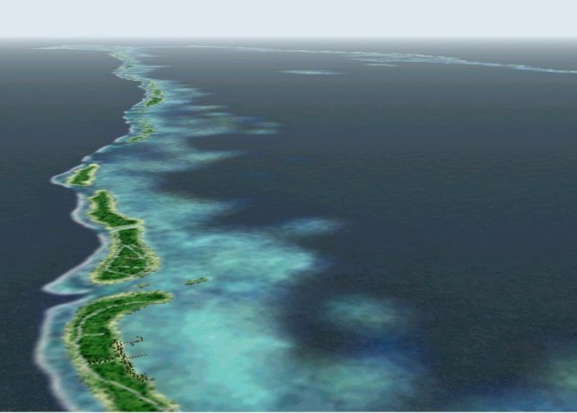

about Contrail
Japanese Page : Click here
Profile
handle: kotan
I have been designed add-on sceneries of Microsoft(R) Flight Simulator with a hobby. This homepage includes many screen shots from flight simulation. I will be glad if you get interested in flight simulation, seeing this homepage.
Moreover, many snapshots are also placed. I was not so much interested in the photograph before. However, I got an camera of high magnification which mounted O.I.S (Optical Image stabilizer) about ten years ago, and it charmed me. And then, I have continued taking many pictures. The theme is the moments that "NATURE" shows.

TAHITI - RANGIROA SCENERY for FS2002
Although it is an old work, it is the first scenery that succeeded in performing penetration processing to the gradation of a lagoon.
Contact
Please send e-mail, if there are a question, comment, etc.